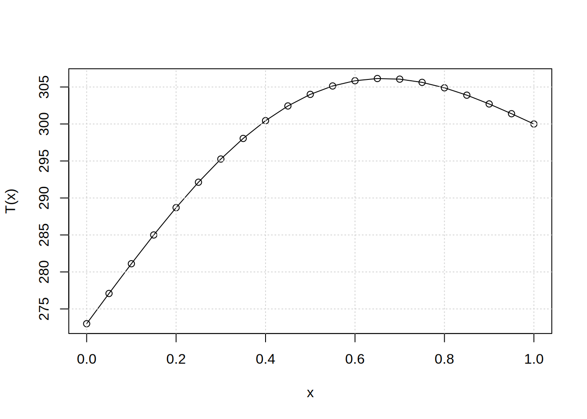

Solution of the set of linear algebraic equations
Files for the present tutorial can be found using following links:
1. Introduction
During this laboratory we will use one of the numerical methods for solution of the set of linear algebraic equations. The numerical methods for this kind of problems are extremely important in practically all applications of (continous) mechanics. In practice, all non-linear problems (also described by partial differential equations) can be transformed using appropriate discretiziation rules and some additional assumptions, to the sets (sometimes huge) of linar equations. These sets are solved in the procedure allowing to obtain approximate solution of the exact non-linear problem. Such transformation is usefull as the sets of linear equations are praticularly well suited for numerical solution by computers which perform efficiently only simple operations (e.g., addition, subtruction). Such approximate solutions are very usefull in engineering practice, very often they are only available solutions of the complex, non-linear problems.
The exit point is the set of linear equations: \[ A \cdot x = b \] where: \(A\) is a matrix of coefficients, \(x\) is vector of unknowns and \(b\) is the right hand side (RHS) vector that is given. We know how to solve above system using the Gauss method. But before that we will construct the set of the linear equations to solve.
To this goal, we use finite difference method. It is based on discretization of derivatives using the values at different, prdefined points (grid centers). Such approach allows to reformulate problem described by continous differential equations to the set of linear algebraic equations. This process is called discretization. Solution of this problem - meaining finding values of the vector \(x\) - typically requires finding inverse of the matrix \(A\) and finding of its left product with vector \(b\): \[ x = A^{-1}\cdot b\] as \(A^{-1}A=I\) where \(I\) is identity matrix.
Let us note, computation of the inverse matrix \(A^{-1}\) although possible is computationally expensive. For this reason during this classes we use Gauss elimination method that is from the class of the direct methods (not iterative) for solution of the set of linear algebraic equations.
Futher, we divide the work into two parts. First we will discretize continous problem in order to create the set of linear algebraic equations, next we solve this set using the aformentioned Gauss method.
2. Creation of the set of linear equations
Let us condier a problem of heat transport by conduction in the one dimensional steel rod (see Fig.)

We want to find a distribution of temperature, knowing that at the beggining of the rod, temperature is \(T_p=273\,[K]\) and at the end of the rod \(T_k=300\,[K]\). Additionally we know: \(L=1\,[m]\) the length of the rod, \(\lambda=58\,[W/mK]\) heat conductivity of steel. Moreover, the steel rod is heated by an additional heat source varying along its length as \(Q=-10^4\cdot sin(x\pi)[\frac{W}{m^3}]\).
Hence, the heat conduction is described by the equation: \[ \frac{\partial}{dx} \left( \lambda \frac{\partial T}{dx} \right) = Q(x) \] Taking into account that \(\lambda=const.\), we can simplify above equation to: \[ \frac{d^2T}{dx^2} = \frac{Q(x)}{\lambda} \] This is a second-order, ordinary differential equation (\(T\) depends only on \(x\)) formulated as boundary value problem. Hence, to solve above equation we need two boundary conditions for temperature: \[ T(x=0) = T_p \] \[ T(x=L) = T_k \] In order to solve above problem using finite difference method we have to reformulate it to a set of the linear algebraic equations. To this goal, we have to divide computational domain (length of the rod \(L=1\,[m]\)) into smaller elements. We choose to divide the interval \([0,1]\) into \(N\) elements, as depicted in Figure below.

The points \(x_0, x_1, ..., x_N\) are called the nodes of the computational grid. Let us assume for now, their distribution is uniform (equidistant), hence, \(x_{i+1}-x_i = h\) where \(h = \frac{L}{N}\) is constant, \(L=1\,[m]\) in our case: \[h = \frac{1}{N}\] Before we discretize equation, let’s introduce following notation: \[ T = [T_0, T_1, T_2, T_3, ..., T_N]^T\] where \(T\) is a vector storing values of the solution at discrete grid points \(T=T(x_i)\), \(i=0,...,N\).
Now, let’s recall definition of the derivative of the function: \[ \frac{dT}{dx} = \lim_{dx\to 0}{\frac{T(x+dx)-T(x)}{dx}}\] The computer can not use infinitisemaly small numbers, for this reason \(dx\) in the computer code must be finite. To this goal, let us choose \(h\) which is small but finite: \[\frac{dT}{dx} \approx \frac{T(x+h)-T(x)}{h}\] In above equation one problem appears. For which value of \(x\) abobove formula approximates the derivative: \(x\), \(x+h\) or maybe \(x+\frac{h}{2}\)? In reality above approximation is true for each of the previousely definied points as it is only an approximation.
If we choose that the derivative is approximated at point x: \(\frac{dT}{dx}(x)\) above approximation results in the explicit Euler’s scheme (in space).
If we choose that the derivative is approximated at point x+h: \(\frac{dT}{dx}(x+h)\) above approximation results in implicit Euler’s scheme (in space).
For the present classes, we however assume that the difference \(\frac{T(x+h)-T(x)}{h}\) approximates the value of the derivative at point \(x+h/2\): \(\frac{dT}{dx}(x+\frac{h}{2})\) One can show this is second-order accurate discretization of the derivative. As our heat conduction equation, uses second-order sparial derivative \(\frac{d^2T}{dx^2}\) we use above approximation twice. Let’s introduce notation \(\frac{dT}{dx} = Y\). Then our problem can be written in the form: \[\frac{dY}{dx} = \frac{Q(x)}{\lambda}\] And we use approximation of the derivative of the function \(Y\) (central difference) to obtain: \[\frac{Y(x+\frac{h}{2})-Y(x-\frac{h}{2})}{h} = \frac{Q(x)}{\lambda}\] Let us write terms in above formula explicitely: \(Y(x+\frac{h}{2})=\frac{dT}{dx}(x+\frac{h}{2})\) oraz \(Y(x-\frac{h}{2})=\frac{dT}{dx}(x-\frac{h}{2})\): \[ Y(x+\frac{h}{2}) = \frac{T(x+h)-T(x)}{h}\\ Y(x-\frac{h}{2}) = \frac{T(x)-T(x-h)}{h} \] After substitution to the initial heat condution equation, we obtain: \[\frac{\frac{T(x+h)-T(x)}{h} - \frac{T(x)-T(x-h)}{h}}{h} = \frac{T(x+h)-2\cdot T(x)+T(x-h)}{h^2} = \frac{Q(x)}{\lambda}\] Above formula, is an approximation of the second-order derivative using the values of \(T\) function in three points: \(x-h, x, x+h\). The central scheme is second-order accurate what is its desirable feature, we can use above equation to construct corresponding set of the linear algebraic equations. Let’s modify above formula by multiplying both sides by \(h^2\) what leads to: \[ T(x+h) - 2T(x) + T(x-h) = \frac{Q(x)}{\lambda}h^2 \] Let go back to the figure above presenting discretization. We take into account internal nodes having numbers 1,…,N-1. If we substitute values of following \(x_i\) to the equation above following set of the equations is obained: \[ T_2 - 2 \cdot T_1 + T_0 = \frac{Q(x_1)}{\lambda} \cdot h^2 \\ T_3 - 2 \cdot T_2 + T_1 = \frac{Q(x_2)}{\lambda} \cdot h^2 \\ T_4 - 2 \cdot T_3 + T_2 = \frac{Q(x_3)}{\lambda} \cdot h^2 \\ . \\ . \\ . \\ T_N - 2 \cdot T_{N-1} + T_{N-2} = \frac{Q(x_{N-1})}{\lambda} \cdot h^2 \] Above set omits points \(0\) and \(N\) as it is hard to write an equation for them (nodes \(x_{-1}\) and \(x_{N+1}\) does not exsist) we will take them into account in the moment. Now let’s look on the form of the above equations. Each of them carries information about 3 unknown values denoted as \(T_{i+1}, T_{i}, T_{i-1}\). These are values of the unknown function in corresponding nodes. We introduce one more vector \(F\): \[ F_i = \frac{Q(x_i)}{\lambda} \cdot h^2\] its elements \(F=F(x_i)\) contain values of the known RHS in the equation. Therefore, reformulated equation finaly has a form: \[ T_{i+1} - 2 \cdot T_i + T_{i-1} = F_i \] Using vector notation above equation in matrix form reads: \[ K \cdot T = F\] where \(K\) is the matrix of coefficients: \[ \begin{bmatrix} 1 & -2 & 1 & 0 & \dots & \dots & \dots & 0\\ 0 & 1 & -2 & 1 & 0 & \dots & \dots & 0\\ 0 & 0 & 1 & -2 & 1 & 0 & \dots & 0\\ \vdots & \ddots & \ddots & \ddots & \ddots & \ddots & \ddots & 0\\ 0 & \dots & \dots & \dots & \dots & & 1 & -2 & 1 \end{bmatrix} \times \begin{bmatrix} T_0 \\ T_1 \\ T_2 \\ \vdots \\ T_{N} \end{bmatrix} = \begin{bmatrix} F_1 \\ F_2 \\ \vdots \\ F_{N-1} \end{bmatrix} \] Above set of linear algebraic equation is not closed. As it is easy to notice the matrix \(K\) is not square since two equations for the nodes \(x_0\) and \(x_N\) are missing. Here, we must use boundary values: \[ T(x=x_0) = T_0 = T_p = 273\\ T(x=x_N) = T_N = T_k = 300 \] Above equations mean that we know solution (temperature \(F_0=T_0\) and \(F_N=T_N\)) at points \(x_0\) and \(x_N\). Therefore we can explicitly include them into the set of algerbraic equations:
\[ \begin{bmatrix} 1 & 0 & 0 & 0 & \dots & \dots & \dots & 0\\ 1 & -2 & 1 & 0 & \dots & \dots & \dots & 0\\ 0 & 1 & -2 & 1 & 0 & \dots & \dots & 0\\ 0 & 0 & 1 & -2 & 1 & 0 & \dots & 0\\ \vdots & \ddots & \ddots & \ddots & \ddots & \ddots & \ddots & 0\\ 0 & \dots & \dots & \dots & \dots & 1 & -2 & 1\\ 0 & \dots & \dots & \dots & \dots & \dots & \dots & 1\\ \end{bmatrix} \times \begin{bmatrix} T_0 \\ T_1 \\ T_2 \\ \vdots \\ T_{N-1}\\ T_{N} \end{bmatrix} = \begin{bmatrix} 273 \\ \frac{Q(x_1)}{\lambda} \cdot h^2 \\ \frac{Q(x_2)}{\lambda} \cdot h^2 \\ \vdots \\ \frac{Q(x_{N-1})}{\lambda} \cdot h^2 \\ 300 \end{bmatrix} \]
Exercises
Create a variable: two dimensional array \(K\) using static memory allocation. Set constant size of a matrix
N=6(use an instructionconst int N=...;or preprocessor declaration#defineto change the size of a matrix). Remember, the number of discretization (grid) points equals \(N+1\) in the above example.Create static arrays to store the RHS vector \(F\) and vector of unkowns \(T\)/
Initialize matrix \(K\) according to discretization presented above.
- Write function displaing matrix \(K\) with protoype:
Check if matrix \(K\) in your code has elements as described above.
- Compute the vector of \(F\) using definition from above description.
3. Solution of the set of linear algebraic equations
Finally, we can solve the set of linear algebraic equations. As a result we obtain one-dimensional array \(T\) storing the values of unknown temperature in predefined grid points.
Exercises
Apply function
gaussperforming the Gauss elimination to solve above system of equations. The header of this function:void gauss(int n, double A[][N], double b[], double x[])wherennumber of equations,Athe coefficient matrix,b- the right hand side vector andxthe vector of unknowns (stores final result).Prepeare diagram of the function \(T=T(x)\) using graphical library. If
N=20(meaning 21 points) your result should be similar to the result depicted in the figure below Test your program for different
n(be carefull, the Gauss method is slow \(~n^3\) operations are required to obtain the solution).Based on the function
gausswrite a function computing upper tri-diagonal matrix. Next, use it to compute determinant of the matrix \(K\).